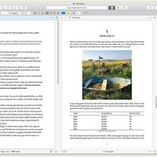
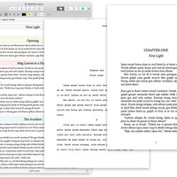
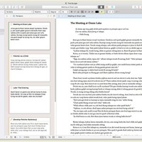
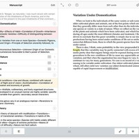
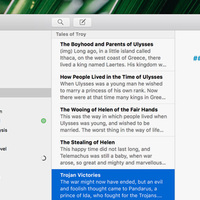
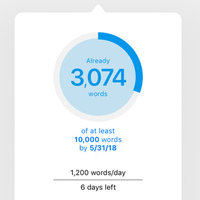
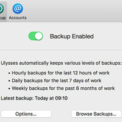
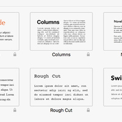

Scrivener can hold research documents for reference as you're writing.
Scrivener has a wide array of export options.
Scrivener has tools to help you plan your story.
Scrivener's Outline View
Ulysses:

Ulysses keeps all of your files in it's library.
Ulysses keeps track of your writing goals.
It can backup your writing.
Ulysses has a great many export options.